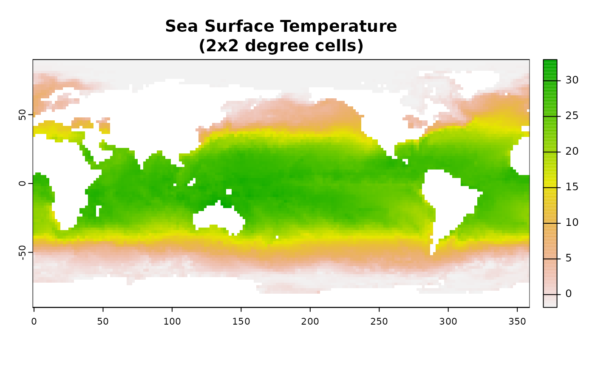
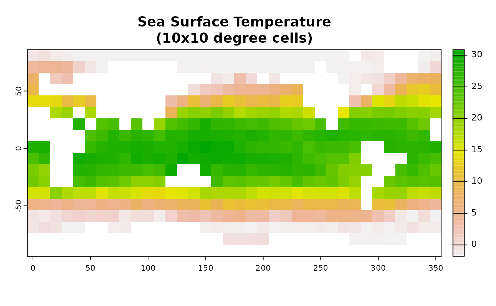

This function provides an interface mirroring that of the GDAL
command-line app gdalmdimtranslate. For a description of the
utility and the arguments that it takes, see the documentation at
https://gdal.org/programs/gdalmdimtranslate.html.
Usage
gdalmdimtranslate(
src_filename,
dst_filename,
...,
co,
IF,
of,
array,
group,
subset,
scaleaxes,
oo,
config_options = character(0),
dryrun = FALSE
)Arguments
- src_filename
Character. Path to a GDAL-supported readable datasource.
- dst_filename
Character. Path to a GDAL-supported output file.
- ...
Here, a placeholder argument that forces users to supply exact names of all subsequent formal arguments.
- co, IF, of, array, group, subset, scaleaxes, oo
See the GDAL project's gdalmdimtranslate documentation for details.
- config_options
A named character vector with GDAL config options, of the form
c(option1=value1, option2=value2). (See here for a complete list of supported config options.)- dryrun
Logical (default
FALSE). IfTRUE, instead of executing the requested call to GDAL, the function will print the command-line call that would produce the equivalent output.
Examples
# \donttest{
## A simple dataset bundled with the sf package
FF <- system.file("nc/cropped.nc", package = "sf")
td <- tempdir()
out_tiff <- file.path(td, "out.tiff")
gdalinfo(FF)
#> Driver: netCDF/Network Common Data Format
#> Files: /home/runner/work/_temp/Library/sf/nc/cropped.nc
#> Size is 512, 512
#> Metadata:
#> NC_GLOBAL#Contact=Dick Reynolds, email: Richard.W.Reynolds@noaa.gov & Chunying Liu, email: Chunying.liu@noaa.gov
#> NC_GLOBAL#Conventions=CF-1.0
#> NC_GLOBAL#creation_date=2011-05-04
#> NC_GLOBAL#History=Tue Feb 13 20:40:49 2018: ncks -d lat,30,40 -d lon,25,50 avhrr-only-v2.19810901.nc -O cropped_example.nc
#> Version 2.0
#> NC_GLOBAL#NCO=4.6.8
#> NC_GLOBAL#Source=NOAA/National Climatic Data Center
#> NC_GLOBAL#title=Daily-OI-V2, final, Data (Ship, Buoy, AVHRR, GSFC-ice)
#> Subdatasets:
#> SUBDATASET_1_NAME=NETCDF:"/home/runner/work/_temp/Library/sf/nc/cropped.nc":anom
#> SUBDATASET_1_DESC=[1x1x11x26] anom (16-bit integer)
#> SUBDATASET_2_NAME=NETCDF:"/home/runner/work/_temp/Library/sf/nc/cropped.nc":err
#> SUBDATASET_2_DESC=[1x1x11x26] err (16-bit integer)
#> SUBDATASET_3_NAME=NETCDF:"/home/runner/work/_temp/Library/sf/nc/cropped.nc":ice
#> SUBDATASET_3_DESC=[1x1x11x26] ice (16-bit integer)
#> SUBDATASET_4_NAME=NETCDF:"/home/runner/work/_temp/Library/sf/nc/cropped.nc":sst
#> SUBDATASET_4_DESC=[1x1x11x26] sst (16-bit integer)
#> Corner Coordinates:
#> Upper Left ( 0.0, 0.0)
#> Lower Left ( 0.0, 512.0)
#> Upper Right ( 512.0, 0.0)
#> Lower Right ( 512.0, 512.0)
#> Center ( 256.0, 256.0)
gdalmdimtranslate(FF, out_tiff, array = "sst")
gdalinfo(out_tiff)
#> Driver: GTiff/GeoTIFF
#> Files: /tmp/RtmpdRuzGn/out.tiff
#> Size is 26, 11
#> Origin = (6.250000000000000,-82.500000000000000)
#> Pixel Size = (0.250000000000000,0.250000000000000)
#> Metadata:
#> long_name=Daily sea surface temperature
#> valid_max=4500
#> valid_min=-300
#> Image Structure Metadata:
#> INTERLEAVE=BAND
#> Corner Coordinates:
#> Upper Left ( 6.2500000, -82.5000000)
#> Lower Left ( 6.2500000, -79.7500000)
#> Upper Right ( 12.7500000, -82.5000000)
#> Lower Right ( 12.7500000, -79.7500000)
#> Center ( 9.5000000, -81.1250000)
#> Band 1 Block=26x11 Type=Int16, ColorInterp=Gray
#> NoData Value=-999
#> Unit Type: degrees C
#> Offset: 0, Scale:0.00999999977648258
#> Metadata:
#> DIM_time_INDEX=0
#> DIM_time_UNIT=days since 1978-01-01 00:00:00
#> DIM_time_VALUE=1339
#> DIM_zlev_INDEX=0
#> DIM_zlev_UNIT=meters
#> DIM_zlev_VALUE=0
## A more interesting dataset bundled with the stars package
if(require(terra)) {
FF <- system.file("nc/reduced.nc", package = "stars")
gdalinfo(FF)
td <- tempdir()
out_1_tiff <- file.path(td, "out_1.tiff")
gdalmdimtranslate(FF, out_1_tiff, array = "sst")
plot(rast(out_1_tiff),
main = "Sea Surface Temperature\n(2x2 degree cells)")
## Translate to a tiff, coarsen by a factor of 5
out_2_tiff <- file.path(td, "out_2.tiff")
gdalmdimtranslate(FF, out_2_tiff, array = "sst",
scaleaxes = "lon(5),lat(5)")
plot(rast(out_2_tiff),
main = "Sea Surface Temperature\n(10x10 degree cells)")
}
#> Driver: netCDF/Network Common Data Format
#> Files: /home/runner/work/_temp/Library/stars/nc/reduced.nc
#> Size is 512, 512
#> Metadata:
#> NC_GLOBAL#CDI=Climate Data Interface version ?? (http://mpimet.mpg.de/cdi)
#> NC_GLOBAL#CDO=Climate Data Operators version 1.9.0 (http://mpimet.mpg.de/cdo)
#> NC_GLOBAL#Contact=Dick Reynolds, email: Richard.W.Reynolds@noaa.gov & Chunying Liu, email: Chunying.liu@noaa.gov
#> NC_GLOBAL#Conventions=CF-1.0
#> NC_GLOBAL#creation_date=2011-03-08
#> NC_GLOBAL#History=Version 2.0
#> NC_GLOBAL#source_data=ESRL ICOADS, AVHRR7, GSFC ice
#> NC_GLOBAL#title=Daily-OI-V2, final, Data (Ship, Buoy, AVHRR, GSFC-ice)
#> Subdatasets:
#> SUBDATASET_1_NAME=NETCDF:"/home/runner/work/_temp/Library/stars/nc/reduced.nc":sst
#> SUBDATASET_1_DESC=[1x1x90x180] sst (16-bit integer)
#> SUBDATASET_2_NAME=NETCDF:"/home/runner/work/_temp/Library/stars/nc/reduced.nc":anom
#> SUBDATASET_2_DESC=[1x1x90x180] anom (16-bit integer)
#> SUBDATASET_3_NAME=NETCDF:"/home/runner/work/_temp/Library/stars/nc/reduced.nc":err
#> SUBDATASET_3_DESC=[1x1x90x180] err (16-bit integer)
#> SUBDATASET_4_NAME=NETCDF:"/home/runner/work/_temp/Library/stars/nc/reduced.nc":ice
#> SUBDATASET_4_DESC=[1x1x90x180] ice (16-bit integer)
#> Corner Coordinates:
#> Upper Left ( 0.0, 0.0)
#> Lower Left ( 0.0, 512.0)
#> Upper Right ( 512.0, 0.0)
#> Lower Right ( 512.0, 512.0)
#> Center ( 256.0, 256.0)


# }